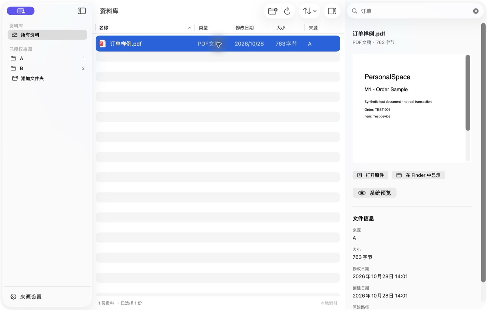

软件 / macOS 应用
PersonalSpace
原生 macOS 个人数字空间
本地优先的个人资料库：只读授权文件夹，搜索预览，识别事务并提醒。
开发中 仍在开发中，功能和界面会继续变化，不是正式发布的产品。

这是什么
一个原生 macOS 应用，把文件资料、个人对象、订单、合同、保修和订阅关联到同一空间。授权文件夹只读，收纳资料会复制到本地资料库；支持搜索预览、事实校对、行动提醒和备份恢复。应用级 AI 助手连接本机 Ollama，也可继续手动操作。
核心功能
- 授权文件夹先统计再确认建立索引，文件变化自动更新
- 名称搜索、显式允许的正文搜索与系统预览
- 个人对象、资料关联、托管副本与快速收纳
- 订单、合同、保修、订阅的事实校对、多个行动与本地提醒
- 本机 Ollama 助手：查资料、准备事务与调用原生操作
- 敏感资料保护、备份恢复与保留旧资料库
说明
当前为本地开发与试用构建，尚未完成 Developer ID 签名、公证和独立账户公开分发验收。